Taking on new projects
I design and build websites for clubs, shops, clinics and startups.
Every site on this page was designed and coded by me, from the first sketch to the live domain. My day job is software engineering, ten years of it, so the sites are fast, solid, and ready to grow.
See six of them ↓Tehran English Discussion
A club that meets every Friday around one long table to share what life has taught them, in English. The site had to feel like that room: warm, a little old-fashioned, and full of people.
- Countdown to the next Friday, in both calendars
- Archive of every session, with member ratings
- People pages and a Topic Jar
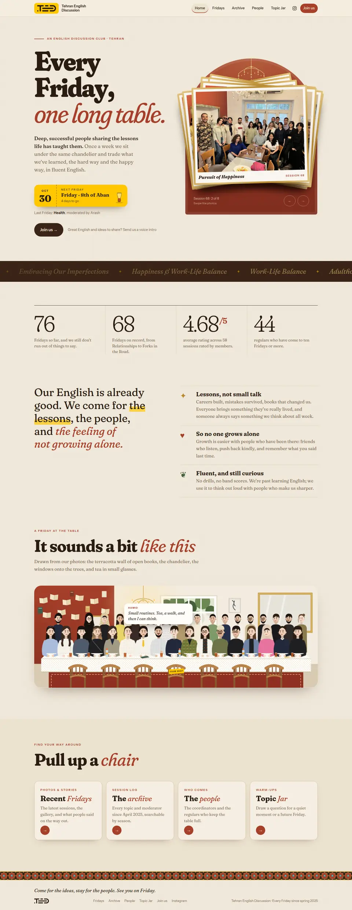
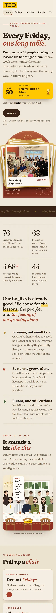
Run Baby Run
A free running club with three group runs a week: no membership, no pace requirement. So the site is loud, friendly and impossible to misread. The schedule is up front and the WhatsApp button is one tap away.
- Weekly schedule and a running diary
- Photo gallery and upcoming races
- Members leaderboard
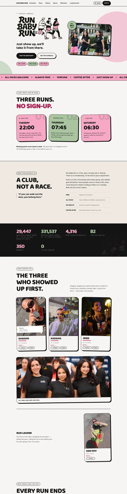
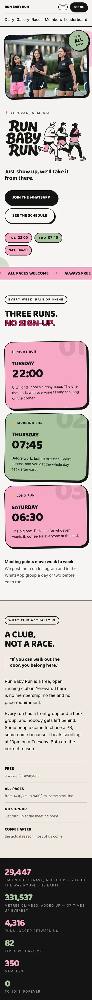
AI Engineering
The page for my 12-week mentorship, where engineers build an AI coding agent from scratch. It's written for developers, so it looks like their tools: a terminal in the hero and a curriculum laid out week by week.
- Week-by-week curriculum
- Webinar, blog and jobs pages
- Python and TypeScript tracks
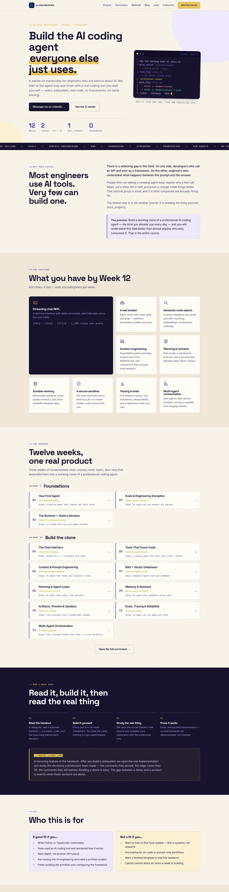
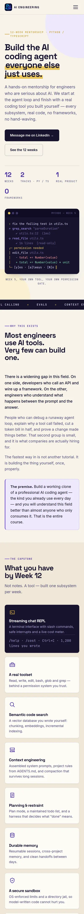
Abrisham Gallery
A design house that sells clothing, home décor, jewelry, bags and perfume, and runs a café. I built a Persian, right-to-left storefront that lets the photography do the talking, with every category one tap away.
- Right-to-left Persian storefront
- Product catalogue and cart
- Language switch
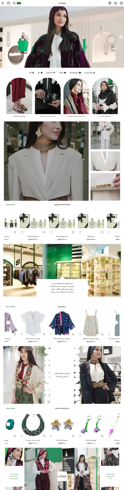
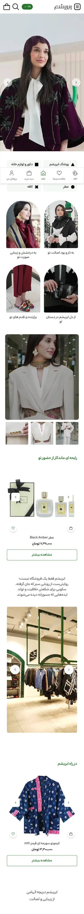
BioLIMS
Free sample management for academic labs that still track freezer boxes in Excel. The page makes the case in one screen, then backs it up with features, a comparison and a live demo.
- Product tour and comparison
- Hosted or self-hosted options
- Live demo account
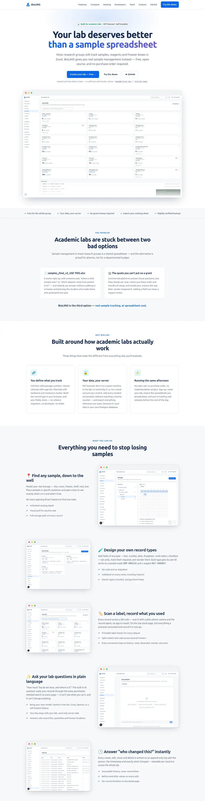
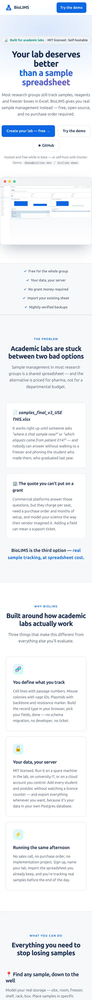
Del Asa Clinic
Instead of debating mockups, I built the whole site once and gave it a set of themes. The clinic compared colours, fonts and button styles on the real thing, then picked the one that felt right.
- Multiple complete themes
- Live font and style switcher
- Right-to-left Persian
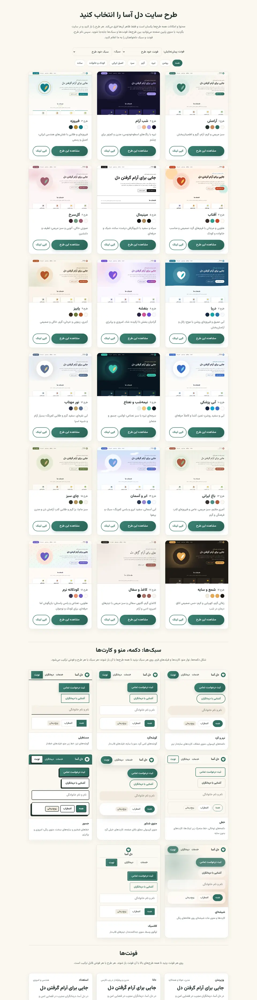
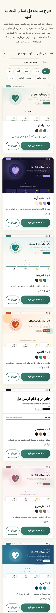
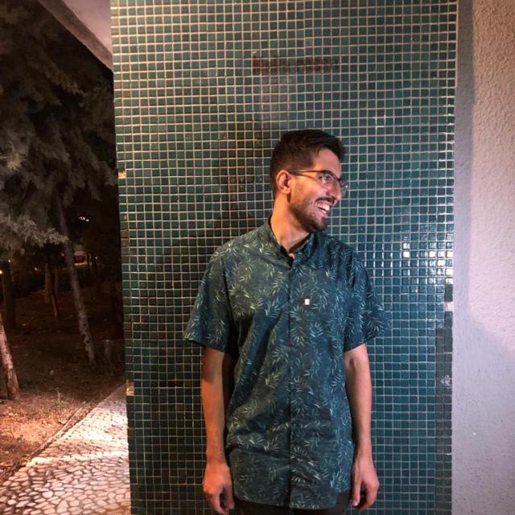
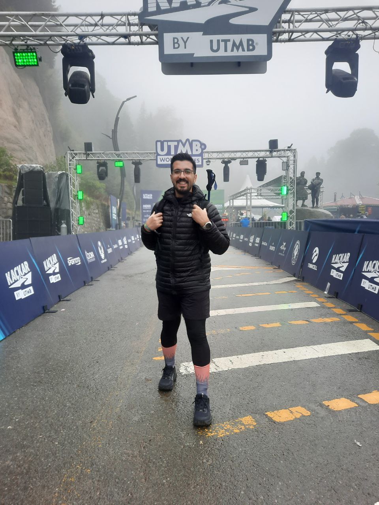
Hi, I'm Pouria.
I'm a software engineer from Iran, living in Yerevan, Armenia. I've been building for the web since 2015: online shops, payment systems, dashboards, and lately AI products.
Websites are where all of that meets real people. A running club should feel like a running club. A clinic should feel calm. A shop should get out of the way of its products. I like working out what a place should feel like, then building it properly.
Away from the keyboard, I run long distances.
Working with me
You talk to the person building it.
No account managers and no handoffs. You tell me what you need; I design it, build it and put it online.
Persian or English, left or right.
I build in both languages. Abrisham and Del Asa are right-to-left Persian sites; the others are in English.
Built like software, not a template.
Hand-written code that's quick on phones and yours to keep. Simple sites can be hosted for free.
Room to grow.
Bookings, payments, a members area, an AI assistant: when you need more, that's been my day job for ten years.
Before the websites
- 2025 – nowAgentonic
AI agents and search over company data. Remote.
- 2023 – 2025Prima Luxury, Dubai
Led a team of ten building an AI-driven CRM, plus marketing sites in Next.js.
- 2021 – 2023Snapp, Tehran
Ride-hailing for 40 million users. Backend services in Go; rebuilt the corporate panel in React.
- 2019 – 2021ZarinPal, Tehran
Team lead on a new payment gateway, from nothing to launch.
- 2015 – 2019MTN Irancell, Tehran
Built the online shop, which became the main sales channel, and a point-of-sale system used in 10,000 stores.
Have a website in mind?
Tell me what it's for and who it's for. I'll get back to you with questions and ideas.
pjsofts@gmail.com